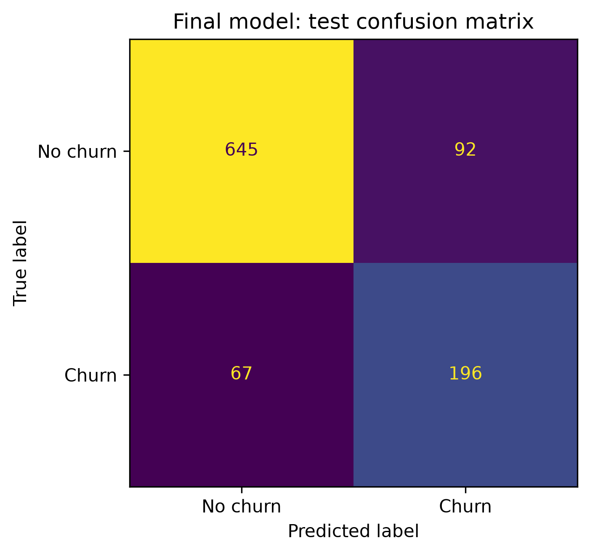

Classification · Model interpretation
Telecom customer churn analysis
Which customers are at higher risk of leaving?
I compared five classifiers, selected a decision threshold on development data, and interpreted the final Logistic Regression model.
A useful churn score needs an explicit trade-off: this threshold recovered about three quarters of churn cases, with false positives that a retention team would also need to handle.

The process
How I approached it
-
Prepare customer features
Cleaned the supplied customer extract and built features from service, billing, usage and support attributes. Preprocessing stays within training pipelines.
-
Compare five classifiers
Compared Logistic Regression, Random Forest, XGBoost, CatBoost and LightGBM, then used five-fold out-of-fold predictions on development data to select the final model and threshold.
-
Evaluate and explain
Reported the locked test metrics and used coefficients and SHAP to interpret associations. Packaged the selected pipeline with a standalone scoring script.
The evidence
What the results show
F1 0.711 at threshold 0.353
The recorded test result balances precision of 0.681 and recall of 0.745. ROC-AUC was 0.895; that describes ranking across thresholds, not the result of a retention campaign.
A simple model was selected
Logistic Regression was selected within the comparison. The analysis includes model interpretation and explicit threshold selection, rather than relying on the default 0.5 cut-off.
Reading the results responsibly
Where the evidence stops
The augmented dataset’s provenance and the timing of its extra fields remain unverified. A random split does not establish future-period performance. Model associations are not causes, and no reduction in churn or financial savings was measured.
What I would evaluate next
Verify that each input exists before churn is observed, evaluate on a later customer cohort, and select any operational threshold using outreach costs and capacity.
Explore the work
The repository includes the selected model, aggregate results, a static HTML report and a synthetic input example. Source customer records and individual-customer exports are excluded. Inference works with the synthetic example.
Code, results & methodology